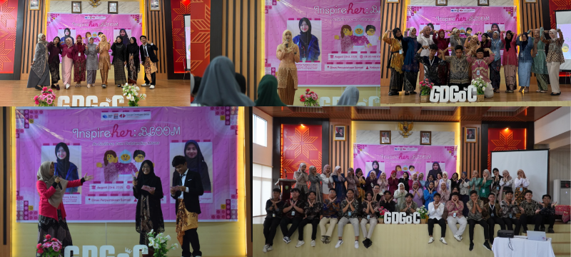
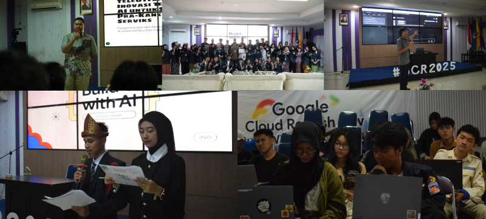
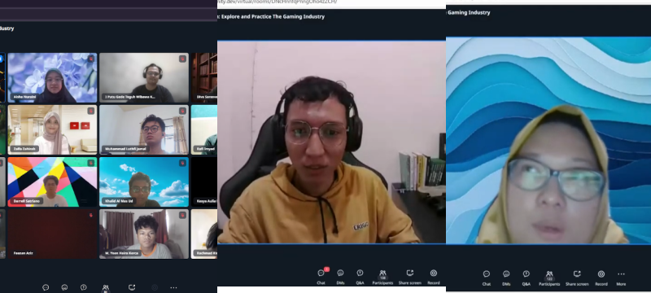

Served on the Project Management Core Team and as Project Advisor across 13+ conferences, roadshows, and workshops. Coordinated cross-division committees, managed speakers, resolved D-1 venue emergencies, and earned the Best Core Team Member award (2025).
- 13+
- technology events coordinated
- 1,000+
- total participants across those events
Advised 35 committee members across 6 operational divisions (Program, Sponsorship, PR, Media, Logistics, Liaison) for a national women-in-tech conference, structuring milestone tracking, sponsor deliverables, and run-of-show execution.

When the primary auditorium became unavailable 24 hours before doors opened, I coordinated directly with faculty leadership and logistics leads to secure and re-rig an alternative venue, delivering the seminar and hands-on cloud workshop for 300+ attendees on schedule.

Guided committee leads through speaker onboarding, dry-run moderation, and live virtual session operations connecting 100+ attendees with educational game developers.
